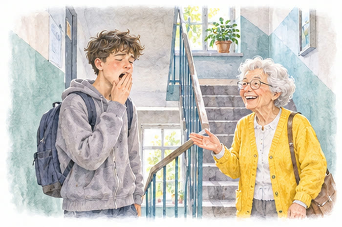

Listen to the text
Speed:

Mum calls me a sleepyhead. She is right. Mornings and I are not friends. Here is my usual school day, minute by minute. 6.45. The alarm rings. I turn it off without opening my eyes. 6.55. The second alarm. I hate it. 7.05. Mum opens the door. "Get up, sleepyhead! You look pale. Did you read under the blanket again?" I did. 7.15. I am in the bathroom. I look at myself in the mirror. A pale face with red eyes looks back. 7.25. Breakfast. Mum goes crazy about healthy food, so it is porridge with fruit. I would prefer a sandwich, but I am too sleepy to argue. 7.40. I can't find my left shoe. The cat is sleeping in it. 7.50. I run out. On the stairs I meet our neighbour, Mrs Lida. She is eighty, and she is coming back from her morning walk. She wears a bright yellow cardigan and looks fresher than I do. "Good morning, young man! What a wonderful day!" I say something like "mmm". 8.10. On the bus I fall asleep and almost miss my stop. 8.30. The first lesson. By the second lesson I finally wake up. Yesterday I asked Mrs Lida about her secret. "I go to bed at ten, dear. I have done it for sixty years. And I go crazy about mornings. The world is new every day at six. It is a pity to miss it." I decided to try. Last night I went to bed at ten. This morning I got up at the first alarm. Mrs Lida was right. But don't tell Mum.
Tap any sentence to hear it again.
Сподобалось? На сайті ще більше матеріалів для вчителів!
Reader, презентації, ігри, діагностичні та контрольні роботи до підручників 1-11 класів.
Перейти на сайт materials.allaenglish.com